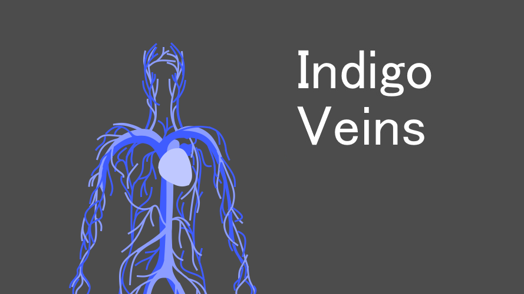
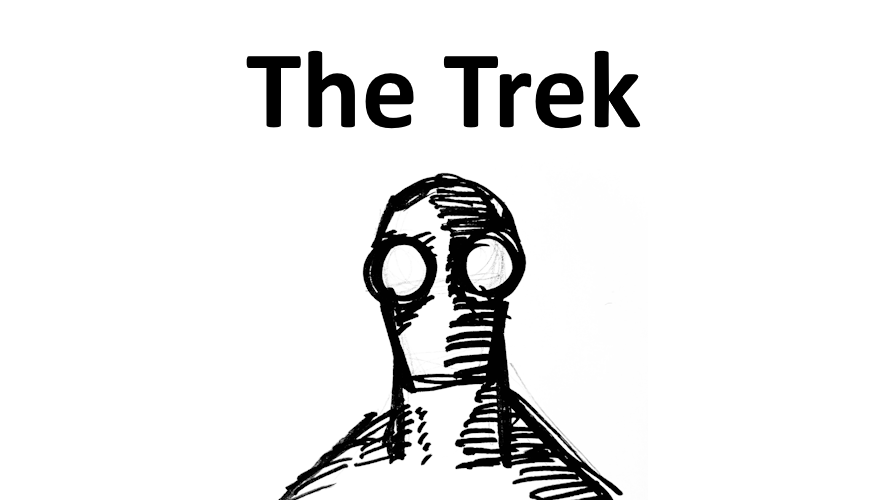
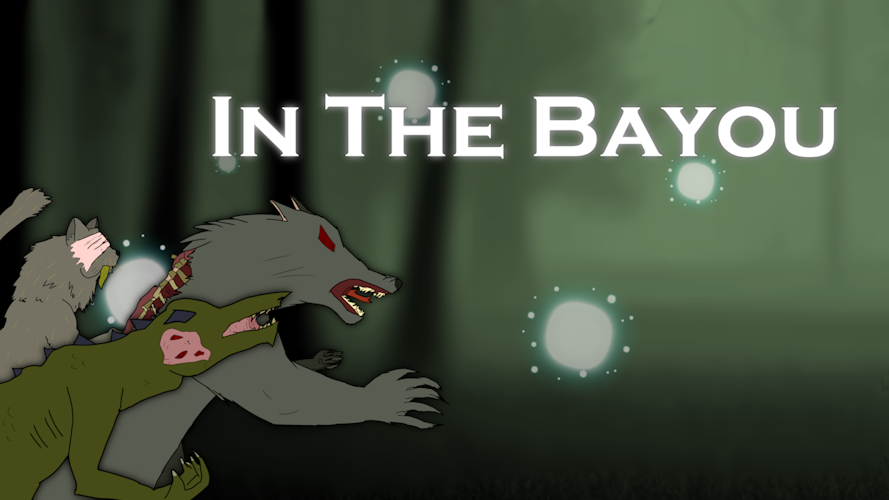

Emily Liu
Video Game and Web Developer
Hello, my name is Emily and I am an undergraduate student from Boise State University studying Games, Interactive Media, and Mobile Technology.
I specialize in Video Game Development and Front-End Web Development.
I created this website to showcase all the projects I've worked on.
My Skills
University Projects
AR Photo Booth
Solo Project
AR Photo Booth is a Windows PC app where you can take photos, and interact in a digital environment with AR body tracking. You can set the chroma key by clicking on the camera feed for selecting a specified color, and changing the slider values for the border and color feathering. Once it's set, select an interactive environment and you're now ready to take some pictures! After pressing the button, a 5-second countdown will start and the snapped photo shows up on the second monitor. If you like the picture shown, you can save it and it will show up in the current folder of the app!
This project is currently being made in Unity, and will be built for Windows PC.
Shrimp Mobile Data Narrative
Solo Project
Shrimp Mobile Data Narrative is a website about the different types of shrimps discovered and where you can find them. While there are over 2000 species of shrimps in the world, this website only show shrimps that start from "A" to "C" from the Integrated Taxonomic Information System and SeaLifeBase database search. The data visualizations shown in the website are Word Cloud, Radial Dendrogram, and Density 2D Hexbin Chart. There is also a React Data Table near the end to show all the shrimps used. Wikipedia was used to explain what shrimps are, and the different environments they appear in.
This project was created with HTML, CSS, and JavaScript. It uses Bootstrap to make the website mobile-friendly, D3 to create the data visualizations, and React to make it run efficiently.
Target Practice
Team Project
Target Practice is a 4-player, competitive multiplayer, FPS game played with LAN connectivity. Players are tasked to score points by moving around in a sci-fi arena, finding and shooting the randomly spawning targets, while also avoiding axe-wielding enemies. All within a limited amount of time. When time is up, the player with the highest score wins.
This project was created with 3 other students, and made in Unreal Engine 5. My contributions to the project were programming player movement and shooting, LAN connectivity, and building the arena with free assets from the Fab store.
Dust Devil Dale
Team Project
Dust Devil Dale is a 2-player, splitscreen co-op, side-scrolling beat 'em up game played with a custom Arduino controller and gamepad. You play as Dust Devil Dale, a sheriff who got his gold stolen by bandits. Fight off waves of enemies by punching and summoning lightning. Reach the end of the level to reclaim your gold!
This project was created with 3 other students, and made in Unreal Engine 5. We worked with a client, who has cerebral palsy, to create an accessible gaming controller made with Arduino for them to use. My contributions to the project were programming the player movement, fighting system, spline-based camera movement, enemy AI and spawning, splitscreen multiplayer, retarget and fix Mixamo animations, helping rig and import custom character models.
Galactic Pizza Party
Solo Project
Galactic Pizza Party is singleplayer, open world VR game where you swing around the city like Spider-Man. You play as a delivery boy working for the pizza chain Galactic Pizza Party LLC and your job is to deliver pizzas to aliens. You're assigned to a planet with poor city planning that doesn't support vehicle and bike transportation. The company's solution? Equip their delivery boys with sticky gloves, wrist-mounted line launchers, and soft-landing boots! Drones would do a much better job, but they're expensive to maintain and are prone to theft. So, equip your gear and start delivering pizzas to those hungry customers!
This was made in Unity, built for the Meta Quest 2. 3D models were made using Autodesk Maya, Adobe Photoshop, and paint.NET.
Abattoir
Team Project
Abattoir is a singleplayer 2D side-scrolling game that uses a webcam, Victorian calling cards, and an optional Victorian trivia sheet to unlock doors in a dark castle. You play as a monster hunter looking for the ultimate treasure, a mummy sarcophagus. You located it in a dark tomb filled with vampires and werewolves. There are doors that are locked and the only way to open them is to scan the coresponding card by holding it in front of your webcam. Navigate the maze, collect some treasure, and claim the sarcophagus.
This project was created with 4 other students, and made in Unity with Vuforia for AR Image Tracking. My contributions to the project was providing code for player movement and falling platforms, creating the enemies, and testing the AR Image Tracking.
Mantis
Solo Project
Mantis is a singleplayer 2D side-scrolling game with a score system and timer. You play as Mantis, a top student of a prestigious fighting school suffering from burn out. She's about to start her daily exercise, but was stopped by a group of sharks who wanted to fight. She quickly pummeled them and went on with her day. Until it was revealed that they called for back up. After stealing her gym bag, they escaped into an unfinished painting. With no other choice, she followed them.
This project was my first introduction to Unity and game development. Characters and animated cutscene were made using Adobe Animate. Other visual assets were made with paint.NET.
Personal Projects

Indigo Veins
Solo Project
Indigo Veins is a singleplayer 3D top-down, point-and-click game where you travel towards your destination within a limited time. You are on your way to get your doses from the distribution center. During your journey, you've been wondering if it's worth living like this. Everyone living inside a monster's corpse while the outside world is still healing. And the only source of "food" are the doses, harvested from the crystalized blood inside the monster's veins. Where ever you go, you'll have to choose before time runs out.
This was made with Godot for the Shortage Game Jam, hosted by the Game Dev and Design Club at Boise State University. The theme for the jam was "Shortage" and submissions were individual, or with a group. My main goal of this project was to learn the Godot game engine.

The Trek
Solo Project
The Trek is a singleplayer 2D top-down game with a minimalist look and simple dialogue choices. You are about to go on The Trek, a mysterious journey that everyone has to go on. Before you depart, you can talk to other people and get their perspective on The Trek. You can choose to start your journey, or go back home.
This was made for the Beyond the Frontier game jam, hosted by the Game Dev and Design Club at Boise State University. The theme for the jam was "Frontier" and submissions are individual. This was made in Unity, character portraits were drawn traditionally and edited digitally.

In The Bayou
Team Project
In The Bayou is a supernatural, horror visual novel made for the Bad Art Visual Novel Jam. You play as Mateo, a brother struggling to stay afloat with his sister because Gary's Gator Farm moved into town and taking all the customers. After rescuing one of Gary's employees, Mateo becomes afflicted with something supernatural and now becomes entangled in the supernatural balance of his swamp home.
This was made in Renpy with 2 other developers. The theme for the jam was "Transformation". My contributions to the project were programming all the dialogue and player choices.
Plants vs Bugs
Team Project
Plants vs Bugs is a singleplayer 2D top-down, tower defense game inspired by Plants vs Zombies and Bloons TD. You play as a Life Lily Farmer, an agricultural profession known for its high mortality rate because they often encounter mutated bugs. Your job is to cultivate Life Lilies to survive in this harsh world. During the day, you prepare your plot of land by planting genetically modified seeds. When nighttime falls, you must keep your lilies safe against the mutated bugs.
This was made in Unity with 4 other developers and 4 composers for the Game/Music Jam 2022. The theme for the jam was "Growth". My contributions to the project were creating all the visual assets, testing, and editing the trailer.